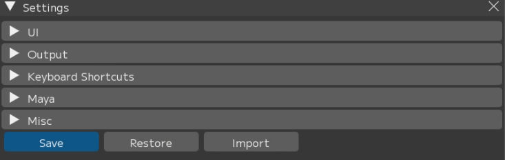
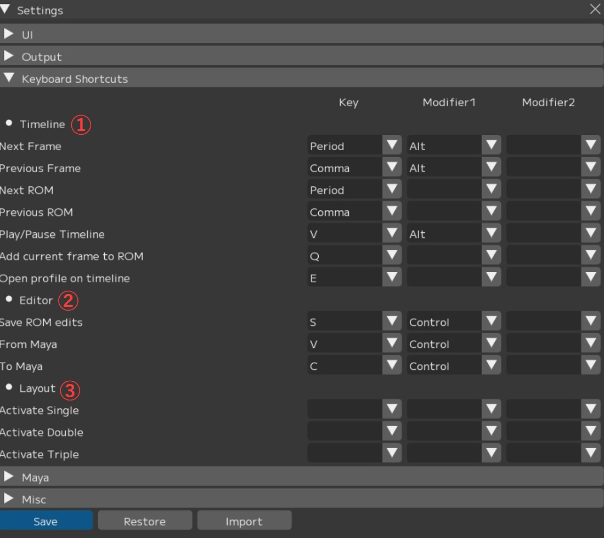
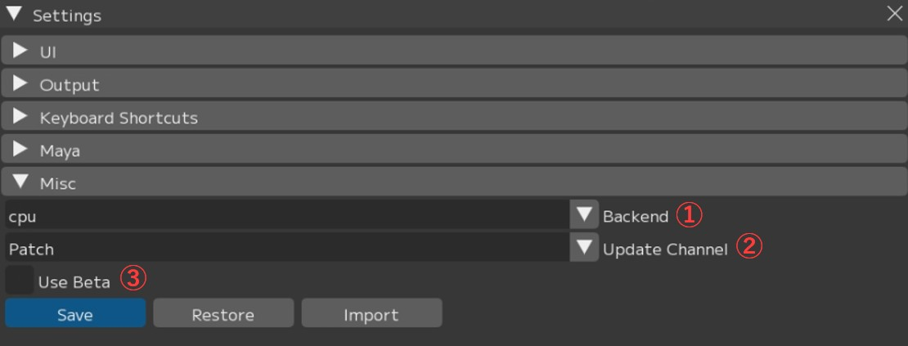

環境設定（File ▶ Settingsウィンドウ）
Fileメニューのうち、FCSの全体的な動作環境やパス設定、および詳細なカスタマイズを行うための設定メニューについて解説します。
{kind=link}

【Save】：設定を保存 ※保存後FCSを再起動することで設定が反映されます。
【Restore】：設定をデフォルトに戻し、FCSを再起動
【import】：他のバージョンなどから設定をインポートし、FCSを再起動
C:\Users[ユーザー名].fcs\Cortado[FCSバージョン]にあるmy_conf.yamlを読み込んでください。

① Global
・Font Size：文字の大きさ
・Language：言語設定
② Gallery
・Thumbnail width：ギャラリーに表示されるプロファイル画像の横幅
・Default Cols：ギャラリーのデフォルトの列数
③ Video Player
・Cache Frame Max：メモリにキャッシュするフレームの最大値
・Default Tags：デフォルトで付与するタグ名
Note
Cache Frame Maxは数値を上げるほど多くのメモリ容量を消費します。
FullHDサイズだと10000fごとに約64GB使用される目安です。
-1を指定すると無制限にキャッシュを保存します。
この設定は十分なメモリがある場合のみ使用してください。
④ Video Library
・Cache Frame Max：Videoインポートで回転処理の設定画面を表示するかどうか
・Default Rotation：Videoインポート時のデフォルトの回転値（0＝回転なし）
アニメーション出力・プレイブラスト出力のデフォルト設定を変更できます。

① Default output options：アニメーション出力のデフォルト設定
・Default Folder：デフォルトの出力先フォルダ
・Default Filename：デフォルトのファイル名
・Default Filename(Batch)：バッチ出力時のデフォルトファイル名
・Default Maya scene format(Batch)：デフォルトのMaya保存形式
② Playblast：プレイブラスト出力のデフォルト設定
・Encoder：プレイブラストのエンコード設定
・Width：プレイブラストの横幅
・Height：プレイブラストの縦幅
・Quality：プレイブラストの画質
・Percent：プレイブラストの解像度
FCSを使用するときのキーボードショートカットを設定できます。
同時押しはキー1種+修飾キー2種の3ボタンまで登録可能です。
{kind=link}

① Timeline
・Next Frame：次のフレームへ
・Previous Frame：前のフレームへ
・Next ROM：次のプロファイルへ
・Previous ROM：前のプロファイルへ
・Play/Pause Timeline：タイムラインの再生 / 一時停止
・Add current frame to ROM：現在のフレームをプロファイルとして追加
・Open profile on timeline：現在選択しているプロファイルの動画を開く
② Editor
・Save ROM edits：プロファイルの保存
・From Maya：表情の値をMayaから読み込み
・To Maya：表情の値をMayaへ送信
③ Layout
・Active Single：Singleのプリセットレイアウトに変更
・Active Double：Doubleのプリセットレイアウトに変更
・Active Triple：Tripleのプリセットレイアウトに変更
Mayaとの接続に関する設定項目です。

① CommandPort：Mayaとの接続に使用するコマンドポート
② SliderSyncPort：Mayaのタイムラインを取得するコマンドポート
③ Open maya scene at launch：Launch Maya時に登録したMayaシーンも開くか
④ Use gallery character preview：ギャラリーウィンドウのキャラクター表示切替機能を使用する
※再起動不要
⑤ Image Plane：イメージプレーン名 ※再起動不要
⑥ Camera：カメラ名 ※再起動不要
⑦ Install path：Mayaのインストール先 ※再起動不要
{kind=link}

① Backend：データの処理方法を選択（cpu/cuda）
② Update Channel：FCSアップデート時の通知設定
・All：メジャーバージョン・マイナーバージョン両方のアップデート通知を受け取る
・Patch：マイナーバージョンアップ通知のみ受け取る
・None：バージョンアップ通知を受け取らない
③ Use Beta：ベース機能を使用するかを設定
Menu説明 目次
〇File：Session(セッション)ファイルの管理と基本操作
〇Settings：File/Settings FCS全体の環境設定と動作オプション
〇Window：各種ウィンドウの表示・操作ガイド
〇Maya：Mayaの起動・連携
〇View：作業画面のレイアウト調整
〇Explore：FCSからWindowsエクスプローラーのファイル参照
〇Info：バージョン情報など